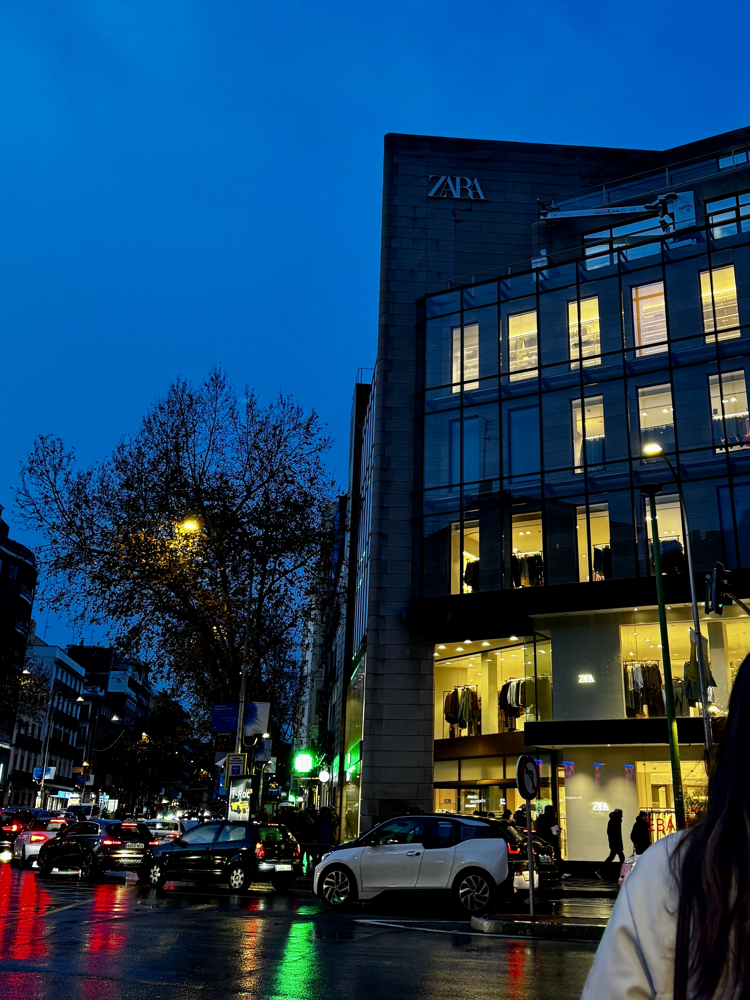
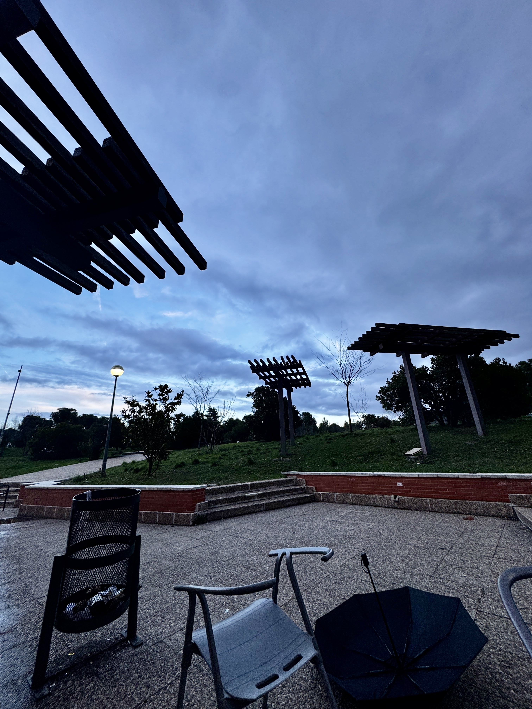
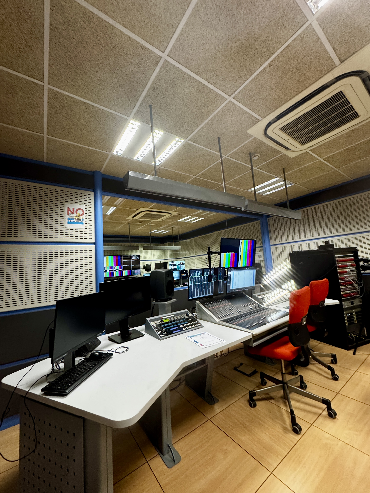
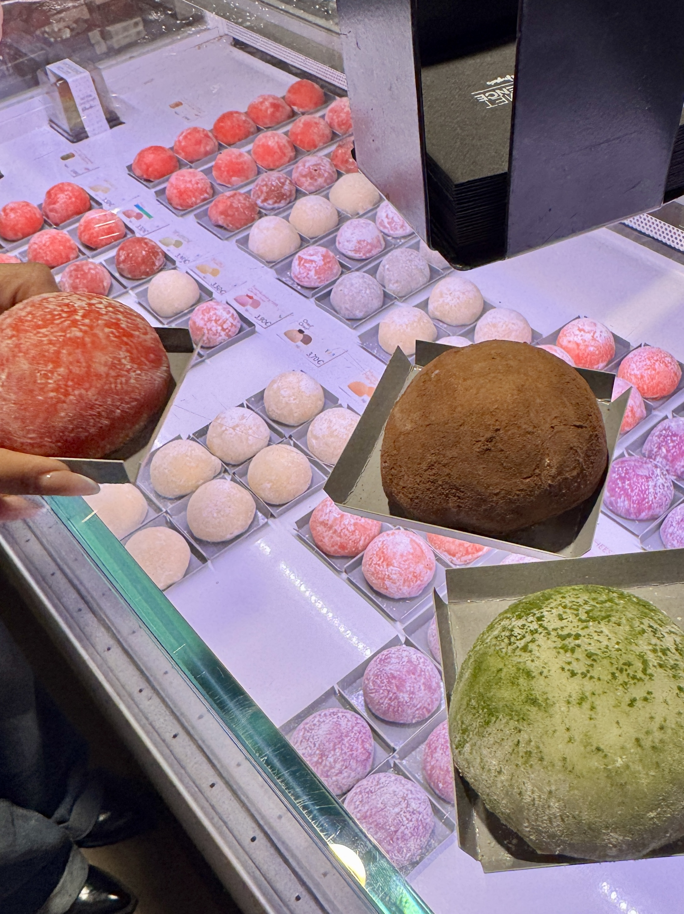
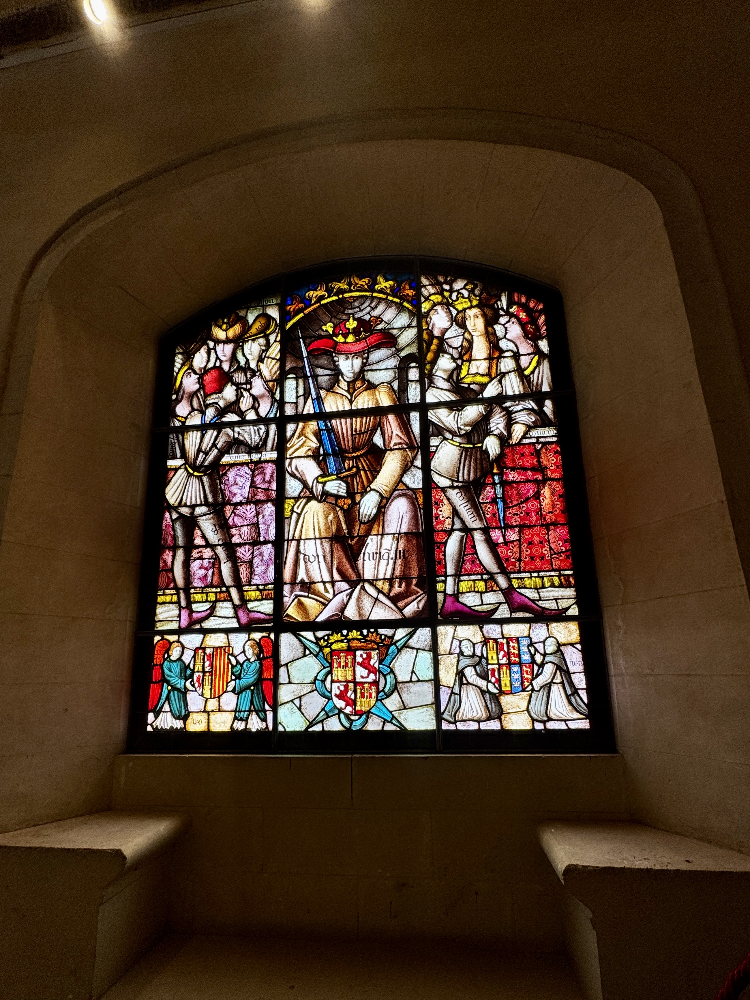
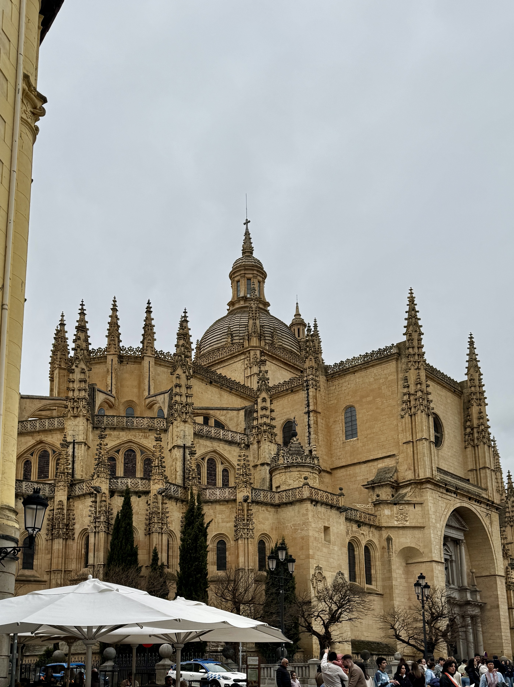
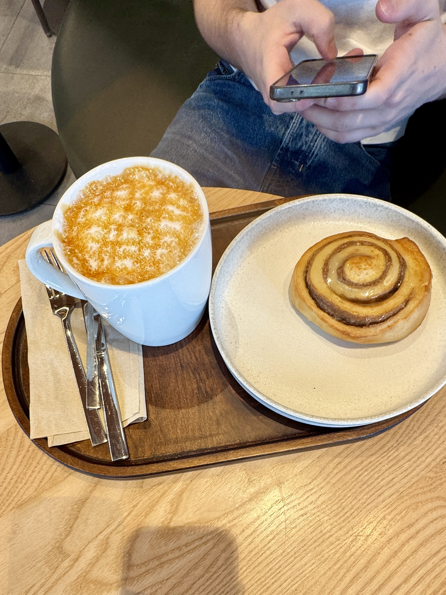

Madrid On Film
12-episode photo diary with soundtrack pairings, custom hover captions, and editorial storytelling.
you learn so much about yourself when you're figuring things out in a new place. every hoosier deserves to experience that.
press play. scroll slow.
about
i build calm, photo-first digital stories around identity, place, and memory. madrid on film is my anchor project: a 12-episode visual diary built from studying abroad.
this site keeps my personal vibe, but now uses a universal portfolio structure that can grow with new projects, writing, and experiments.
featured work
12-episode photo diary with soundtrack pairings, custom hover captions, and editorial storytelling.
photo sequencing, caption writing, and mood-based layouts focused on calm, emotionally clear narratives.
html, css, vanilla js, github pages, light performance optimization, and content-first interface design.
journey
the full madrid on film sequence stays intact below: 12 episodes, 48 photos, and the personal captions that shaped the semester.
first week: jet-lagged, underdressed, and pretending i wasn't overwhelmed.
sounds like holocene · bon iver


i didn't know what kind of city madrid was yet. i just kept looking up.
no plan. just arrived.
one yes. no plan. complete leap of faith.
sounds like run away with me · carly rae jepsen


museo del prado · enero 2026")
i said yes before i felt ready. the city met me halfway.
just go. seriously.
homesick days. lonely days. the week you almost went home.
sounds like homesick · noah kahan



nobody talks about the part where it's hard before it's good. it was hard. then it was so good.
stay. it's worth it.
everyone asked why madrid. nobody accepted "it felt right."
sounds like this must be the place · talking heads




some cities choose you back. madrid chose me and i stopped explaining it.
not barcelona. never barcelona.
third choice. backup plan. total accident.
sounds like home · edward sharpe and the magnetic zeros


the ones you travel with weren't plan A either. now i can't imagine any other version.
no notes. just madrid.
slower mornings. longer coffees. no rushing.
sounds like put your records on · corinne bailey rae


nobody here knew who i was before. i used that. my pace changed and i let it.
less proving. more noticing.
first-gen kid. far from home. standing in the rain in madrid.
sounds like ribs · lorde


to be young and abroad and allowed to just exist without explaining where you came from - that's the whole thing.
i actually made it here.
met in a kitchen. bonded in three days. friends forever probably.
sounds like we are young · fun.




people ask if erasmus friendships are real. ours survived airports, time zones, and post-semester silence.
it counts. it really counts.
last coffee. last walk. last time pretending it wasn't the last.
sounds like the night we met · lord huron



i started counting my last walks before i was ready to call them last.
one more. always one more.
still living it. already missing it. both things true.
sounds like august · taylor swift




the last weeks of a semester abroad hit different. you keep showing up fully while quietly saying goodbye.
grief as a love language.
arrived unsure. left softer. left louder. left more myself.
sounds like bloom · troye sivan




i came here not knowing what kind of person i was becoming. turns out madrid knew before i did.
that's the whole thing. that's all of it.
one week. no wifi. completely unserious.
sounds like island in the sun · weezer


the ones you travel with. we didn't know each other three months ago. then erasmus break turned into sun, atlantic, and a cheap flight nobody overthought.
no notes. just sun.
contact
open to creative collaborations, storytelling projects, and internships.